Rejection sampling method
The Rejection Sampling method, or Acceptance-rejection method, was proposed by von Neumann (1951). See, for instance, Liu (2004) and Gamerman and Lopes (2006).
Setting
One considers a univariate random variable $X$ with density $p=p(x)$ under the following assumptions:
- We may not know the density $p(x)$ but we do know a non-negative function $f(x)$ proportional to the density, with some unknown normalizing constant $Z > 0,$ i.e.
\[ p(x) = \frac{f(x)}{Z}. \]
- We know how to sample from another random variable $X'$ with known density $q=q(x)$ which bounds a multiple of the function $f(x)$ with a known bound, i.e. for some known $M>0,$
\[ f(x) \leq M q(x), \quad \forall x.\]
The rejection sampling method
Under this setting, we obtain samples of $X$ by sampling from $X'$ and accepting or rejecting the candidate sample according to a specific criteria, and we repeat the process until a candidate is accepted, and for as many samples that we want. More precisely, here are the steps of the method.
- Draw a sample $x'$ of $X',$ which we call a candidate sample;
- Compute the acceptance ratio $r(x'),$ where
\[ r(x) = \frac{f(x)}{Mq(x)}.\]
- Draw a sample $u$ from the uniform distribution $\operatorname{Uniform}(0, 1).$
- Accept/reject step:
- If $u \leq r(x'),$ accept the sample $x'$ as a sample $x=x'$ of the desired random variable $X;$
- otherwise, if $u > r(x'),$ reject the sample $x'$ and repeat the process drawing a new candidate and so on, until a candidate sample is accepted.
- Repeat for as many samples as desired.
How do you check that this really yields samples of $X?$
Let us start with another, but related, question: How often is a candidate sample accepted?
Expected acceptance rate
First, notice that
\[ \mathbb{P}(X' \textrm{ is accepted}) = \mathbb{P}\left(U \leq \frac{f(X')}{Mq(X')}\right) = \int_{\{q(x) > 0\}} \mathbb{P}\left( U \leq \frac{f(x)}{Mq(x)} \bigg| X' = x\right) q(x)\;\mathrm{d}x,\]
where the integral is restricted to the region $\{q(x) > 0\}$ since $q(x)$ is the PDF of $X'$ and $\{q(x) > 0\}$ is a carrier of the random variable $X',$ i.e. $q(X') > 0$ almost surely.
The probability of $U$ being less than $f(x)/Mq(x)$ is precisely this ratio, i.e.
\[ \mathbb{P}\left( U \leq \frac{f(x)}{Mq(x)} \bigg| X' = x\right) = \frac{f(x)}{Mq(x)},\]
again in the region $\{q(x) > 0\}.$ Thus,
\[ \begin{align*} \mathbb{P}(X' \textrm{ is accepted}) & = \int_{\{q(x) > 0\}} \frac{f(x)}{Mq(x)} q(x)\;\mathrm{d}x = \int_{\{q(x) > 0\}} \frac{f(x)}{M} \;\mathrm{d}x \\ & = \frac{Z}{M} \int_{\{q(x) > 0\}} \frac{f(x)}{Z} \;\mathrm{d}x = \int_{\{q(x) > 0\}} p(x) \;\mathrm{d}x = \frac{Z}{M}. \end{align*}\]
Recall that $M$ is the bound on $f$, so that the ratio $Z/M$ is related to the bound on the PDF itself,
\[ p(x) = \frac{f(x)}{Z} \leq \frac{M}{Z}q(x).\]
Thus, the tighter the bound, the higher the acceptance rate. A poor acceptance rate means we will have to compute a lot of proposed samples and a lot of acceptance checks to obtain a relativaly small portion of actual samples of the desired distribution.
Distribution of the accepted samples
We may now check the distribution of the accepted samples. This is expressed by the CDF
\[ F_{X' \textrm{ is accepted}} = \mathbb{P}(X' \leq x | X' \textrm{ is accepted}).\]
This can be computed via
\[ F_{X' \textrm{ is accepted}} = \mathbb{P}(X' \leq x | X' \textrm{ is accepted}) = \frac{\mathbb{P}(X' \leq x, \; X' \textrm{ is accepted})}{\mathbb{P}(X' \textrm{ is accepted})}.\]
The numerator is given by
\[ \begin{align*} \mathbb{P}(X' \leq x, \; X' \textrm{ is accepted}) & = \mathbb{P}\left( X' \leq x, \; U \leq \frac{f(X')}{Mq(X')}\right) \\ & = \int_{\{q(x') > 0, \; x' \leq x\}} \mathbb{P}\left( U \leq \frac{f(x')}{Mq(x')} \right) q(x') \;\mathrm{d}x' \\ & = \int_{\{q(x') > 0, \; x' \leq x\}} \int_{\{0 \leq u \leq f(x')/Mq(x')\}} q(x') \;\mathrm{d}u \;\mathrm{d}x' \\ & = \int_{\{q(x') > 0, \; x' \leq x\}} \frac{f(x')}{Mq(x')} q(x')\;\mathrm{d}x' \\ & = \int_{x'\leq x} \frac{f(x')}{M} \;\mathrm{d}x' \\ & = \frac{Z}{M}\int_{x'\leq x} \frac{f(x')}{Z} \;\mathrm{d}x' \\ & = \frac{Z}{M} \int_{-\infty}^x p(x')\;\mathrm{d}x' \\ & = \frac{Z}{M} F_{X}(x). \end{align*}\]
Thus,
\[ F_{X' \textrm{ is accepted}} = \mathbb{P}(X' \leq x | X' \textrm{ is accepted}) = \frac{\mathbb{P}(X' \leq x, \; X' \textrm{ is accepted})}{\mathbb{P}(X' \textrm{ is accepted})} = \frac{\frac{Z}{M} F_{X}(x)}{\frac{Z}{M}} = F_{X}(x).\]
In other words, the probability distribution of the accepted samples of $X'$ is precisely the distribution of $X.$
Numerical example
Let us draw samples from a synthetic distribution with density proportional to a function which is a polynomial with an exponential envelope, of the form
\[ f(x) = (3x^3 + 2x^2 - 4x)^2e^{-x^2}.\]
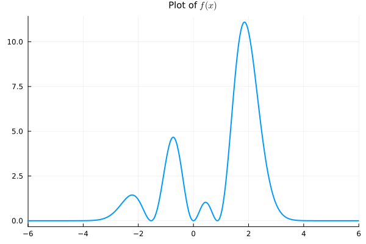One can actually compute the normalizing constant we can write
\[ f(x) = (9x^6 + 12x^5 - 20x^4 - 16x^3 + 16x^2) e^{-x^2},\]
so that the integral with the odd powers vanish and we are left with
\[ \int_{-\infty}^\infty f(x) \;\mathrm{d}x = 9 \int_{-\infty}^\infty x^6 e^{-x^2}\;\mathrm{d}x - 20 \int_{-\infty}^\infty x^4 e^{-x^2}\;\mathrm{d}x + 16 \int_{-\infty}^\infty x^2 e^{-x^2}\;\mathrm{d}x,\]
and each integral can be seen as multiples of the moments of a normal distribution with zero mean and variance $1/2.$ Thus,
\[ \int_{-\infty}^\infty f(x) \;\mathrm{d}x = \sqrt{2\pi\sigma^2} \left( 9 \mathbb{E}[Y^6] - 20\mathbb{E}[Y^4] + 16\mathbb{E}[Y^2]\right),\]
where $Y \sim \mathcal{N}(0, \sigma^2),$ $\sigma^2 = 1/2.$ Since
\[ \mathbb{E}[Y^{2n}] = \sigma^n 2^{-n}(2n)!/n!,\]
we have, in particular,
\[ \mathbb{E}[Y^6] = 15 \sigma^6 = \frac{15}{8}, \quad \mathbb{E}[Y^6] = 15 \sigma^6 = \frac{3}{4}, \quad \mathbb{E}[Y^2] = 15 \sigma^6 = \frac{1}{2}.\]
Thus,
\[ Z = \int_{-\infty}^\infty f(x) \;\mathrm{d}x = \sqrt{\pi} \left( 9 \frac{15}{8} - 20\frac{3}{4} + 16\frac{1}{2}\right) = \frac{79}{8}\sqrt{\pi} \approx 17.50,\]
This is the factor $Z$ in the expression for the density $f=f(x),$
\[ p(x) = \frac{f(x)}{Z} = \frac{8}{79\sqrt{\pi}}(3x^3 + 2x^2 - 4x)^2e^{-x^2}.\]
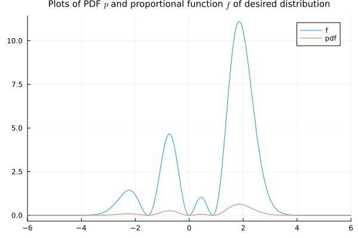Now we need a bound with respect to the density of an easy distribution to sample. We may take $X'$ to be the standard normal distribution, for which the density is
\[ q(x) = \frac{1}{\sqrt{2\pi}} e^{-\frac{1}{2}x^2},\]
and then we need to find $M$ such that $f(x) \leq M q(x),$ i.e.
\[ (9x^6 + 12x^5 - 20x^4 - 16x^3 + 16x^2) e^{-x^2} \leq \frac{M}{\sqrt{2\pi}} e^{-\frac{1}{2}x^2}.\]
For that, we first need to compute the maximum values of the terms of the form $x^n e^{-x^2/2}.$ Since the critical points of such a function occur at $x = \pm \sqrt{n},$ we have
\[ x^n e^{-x^2} \leq n^{n/2} e^{-n/2}e^{-x^2/2},\]
for any $n\in\mathbb{N}.$ With that, and discarding the negative term with even power, we bound
\[ \begin{align*} f(x) & = (9x^6 + 12x^5 - 20x^4 - 16x^3 + 16x^2)e^{-x^2} \\ & \leq \sqrt{2\pi}(9 \times 6^3 e^{-3} + 12 \times 5^{5/2} e^{-5/2} + 16 \times 3^{3/2} e^{-3/2} + 16 \times 2 e^{-1})\frac{1}{\sqrt{2\pi}} e^{-x^2/2}. \end{align*}\]
for all $x\in\mathbb{R}.$ Rounding up the coefficient to an integer, we find that
\[ f(x) \leq 457 q(x),\]
so we take
\[ M = 457.\]
This bound can be visualized as follows
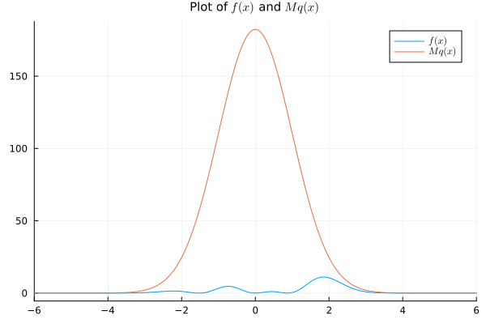Well, one can see it is a loose bound, which will amount to too many rejections. We should find a tighter bound. Let us look for a bound with respect to the density of a normal distribution with variance $2$ instead of the standard normal. For that, we split the exponential as
\[ e^{-x^2} = e^{-\frac{3}{4}x^2} e^{-\frac{1}{4}x^2},\]
so the second exponential goes to the PDF $e^{-x^2/4}/\sqrt{4\pi}$ of the distribution $\mathcal{N}(0, 2),$ while the first exponential is used to bound the polynomial part,
\[ \sqrt{4\pi}(9x^6 + 12x^5 - 20x^4 - 16x^3 + 16x^2)e^{-\frac{3}{4}x^2} \leq M.\]
Since the critical points of $x^ne^{-3x^2/4}$ occur at $x = \pm \sqrt{2n/3},$ we have
\[ x^n e^{-\frac{3}{4}x^2} \leq \left(\frac{2n}{3}\right)^{n/2} e^{-n/2}.\]
Thus,
\[ \begin{align*} & \sqrt{4\pi}(9x^6 + 12x^5 - 20x^4 - 16x^3 + 16x^2)e^{-\frac{3}{4}x^2} \\ & \qquad \leq \sqrt{4\pi}(9\times 4^2 e^{-2} + 12 \times \left(\frac{10}{3}\right)^{5/2} e^{-5/2} + 16 \times 2^{3/2} e^{-3/2} + 16\left(\frac{4}{3}\right) * e^{-1}), \end{align*}\]
so we can take
\[M = 204\]
We can see this bound is a bit tighter than the previous one, but it is still not tight enough as we can see by the high rate of rejection of more than 90% (the estimated value is $Z/M \approx 0.0858$).
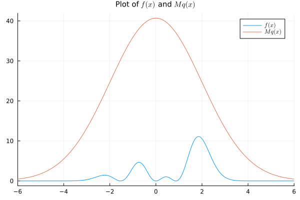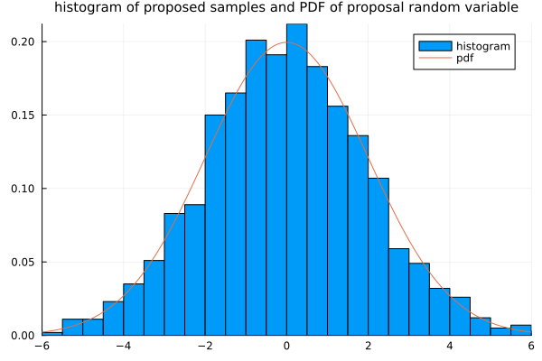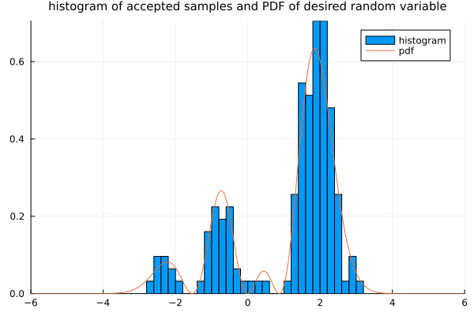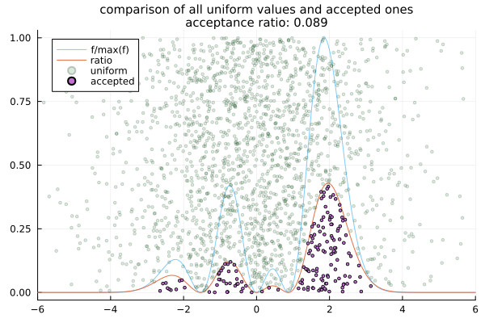We can certainly improve acceptance rate by looking for a tighter bound. A numerical investigation reveals that we can apparently take $M$ as low as $88.$
\[ \max_{-6 \leq x \leq 6} \left(\frac{f(x)}{q(x)}\right) \approx 87.5.\]
Using this bound, the expected acceptance rate is $Z \approx 17.50 / 88 \approx 0.1989,$ so we more than double the acceptance rate, and we have a better approximation of the distribution.
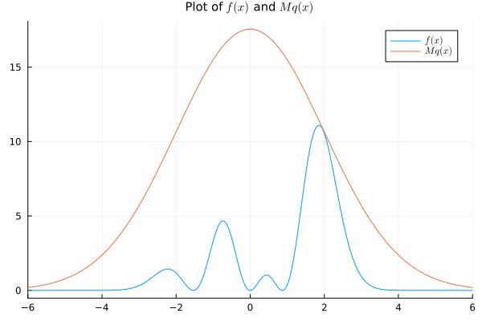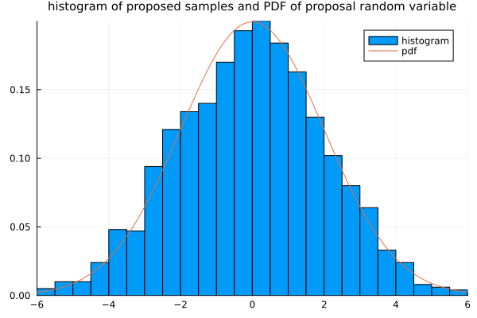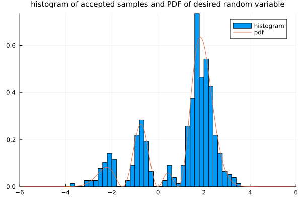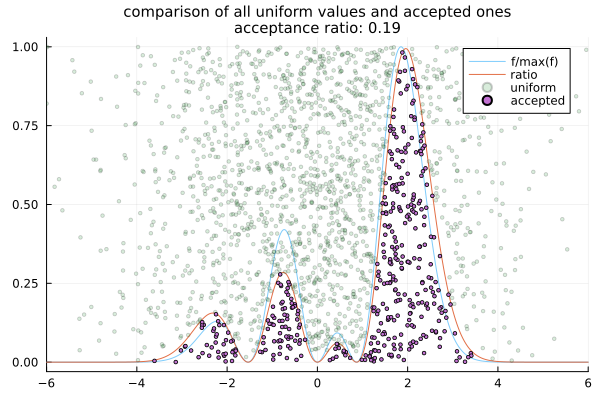We can improve the sampling process much more by working with a normal distribution centered on the mean value obtained from $f,$ which seems to be near $x = 1.68.$
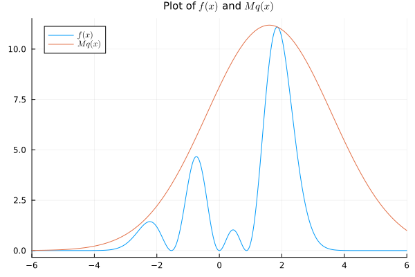vline!([mu], label="mean")References
- Dani Gamerman, Hedibert F. Lopes, "Markov Chain Monte Carlo Stochastic Simulation for Bayesian Inference," Second Edition, Chapman and Hall/CRC, New York, 2006
- Jun S. Liu, "Monte Carlo Strategies in Scientific Computing," Springer Series in Statistics, Springer-Verlag New York 2004
- John von Neumann, "Various techniques used in connection with random digits. Monte Carlo methods" Nat. Bureau Standards, 12 (1951), 36–38.